A nossa casa de família entre oliveiras e árvores de fruto, a passos da vila histórica e a escassos minutos de carro das águas cristalinas das Fragas de São Simão.
Uma Casa Privada para o Seu Grupo
A Casa do Olival é reservada exclusivamente para um grupo de cada vez, garantindo total privacidade em 80 m² interiores e 5.000 m² de olival e árvores de fruto.
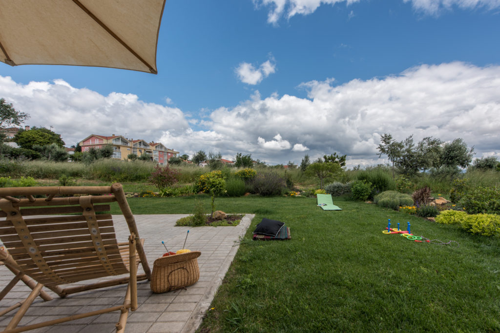
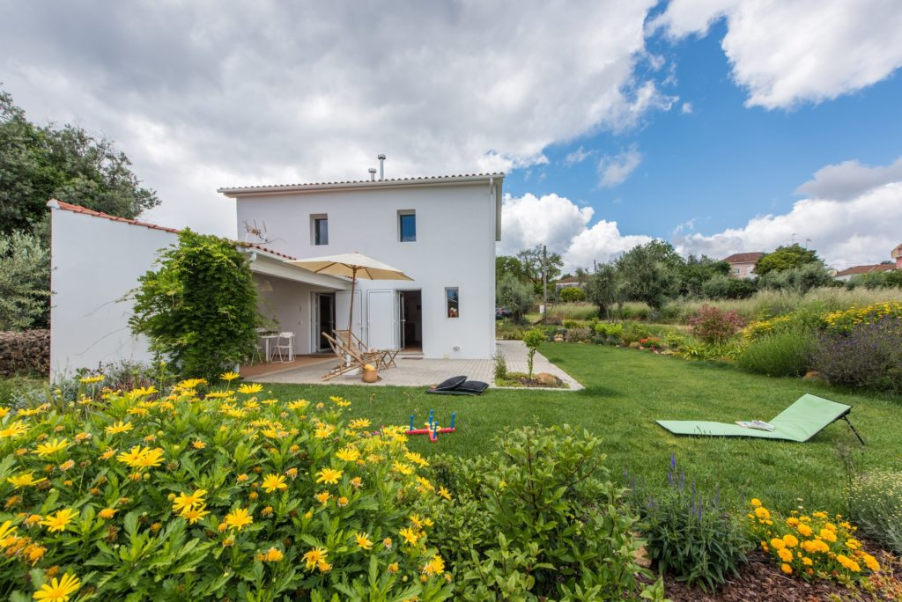
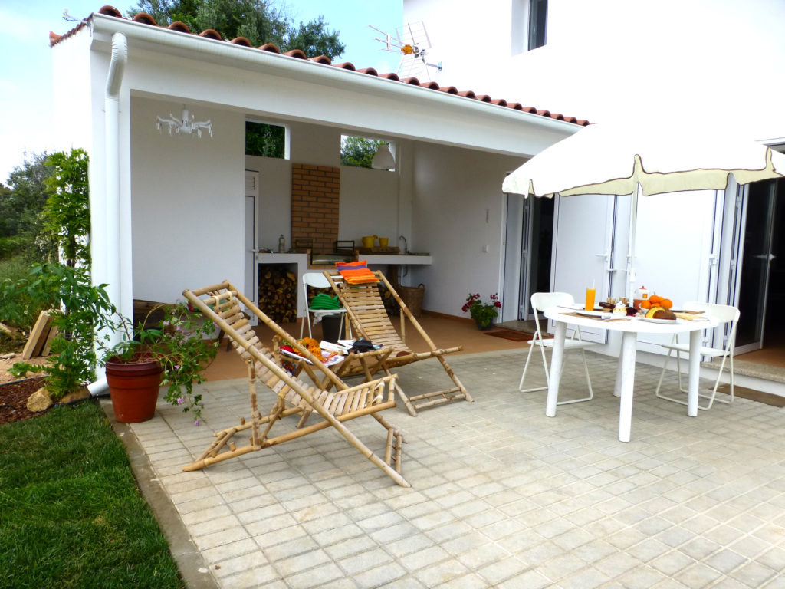
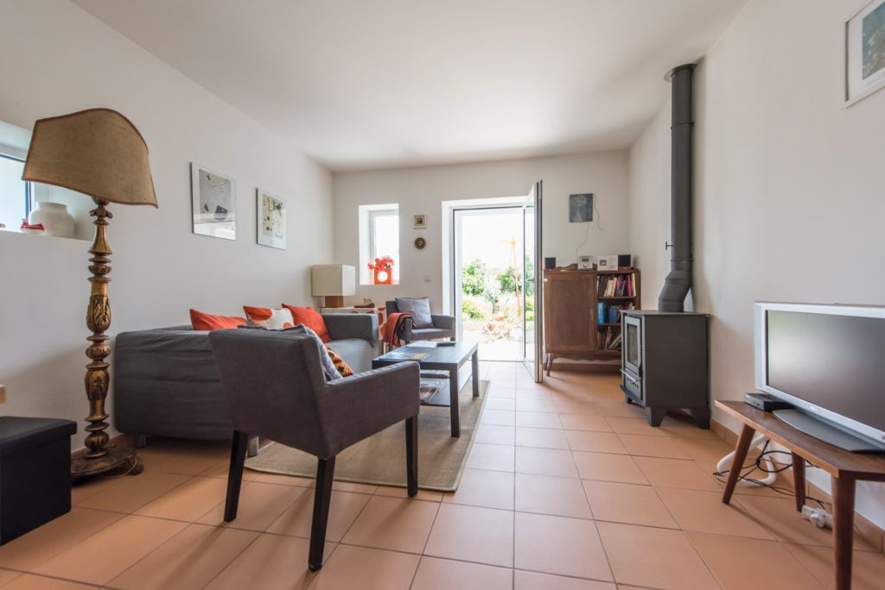
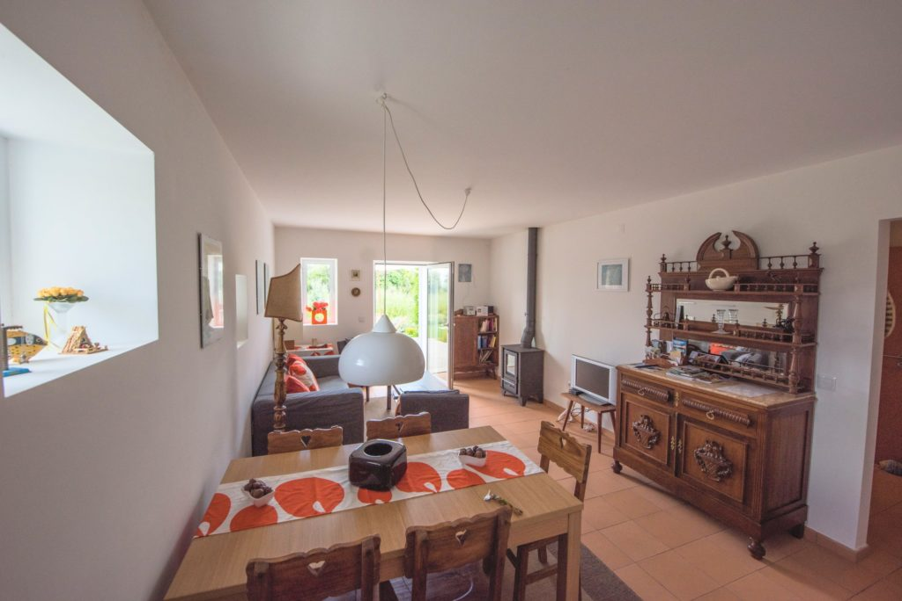
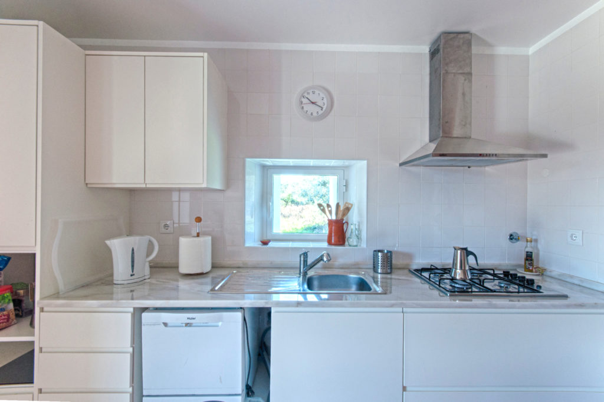
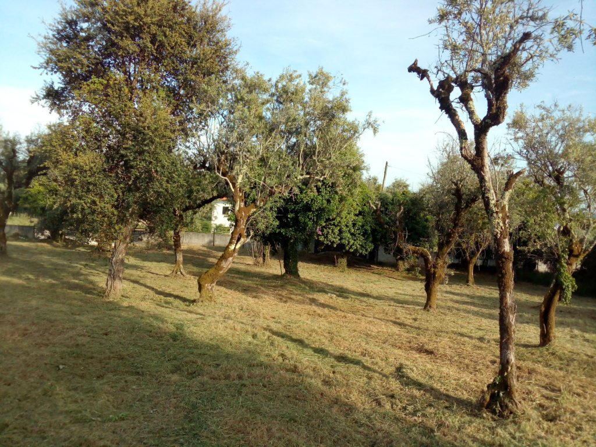
Aluguer Integral e Exclusivo: Moradia de dois pisos para uso exclusivo do seu grupo familiar ou de amigos (capacidade até 6 hóspedes em 3 quartos).
Olival Privado de 5.000 m²: Terreno amplo com laranjeiras e oliveiras onde pode colher laranjas frescas para o pequeno-almoço.
Piso 0 Funcional: Cozinha completa (fogão, micro-ondas, máquina de lavar loiça, cafeteira), sala de estar com salamandra a lenha, WC social e espaço de BookCrossing.
Alpendre & Solário: Zona exterior para refeições ao ar livre, barbecue/grelhador, mesas de apoio, espreguiçadeiras e guarda-sol.
Conforto Familiar: Wi-Fi gratuito de alta velocidade, jogos de tabuleiro, berço e cadeira de refeição para bebés disponíveis.
Nota de Transparência Bruto:As imagens apresentadas refletem a estrutura real da moradia e os dados correspondem integralmente ao registo oficial do alojamento.
"A Casa do Olival nasceu com muito empenho e um grande carinho por Figueiró dos Vinhos. Trata-se de uma habitação que os meus pais me deixaram e que, em 2015, se encontrava em avançado estado de degradação. A necessidade de recuperação era evidente e deitámos mãos à obra em família!
O nosso núcleo familiar encontra-se espalhado por três cantos do mundo e a Casa do Olival é o ninho que construímos para nos aproximar. Espero que sejam muitos a criar memórias tão boas como as que nós temos desta terra."
O que descobrir nos Arredores
As recomendações que partilhamos com quem nos visita, organizadas por proximidade: o centro histórico a minutos a pé, as deslumbrantes Fragas de São Simão e as aldeias e albufeiras da região.
Nota de Transparência Bruto:Os locais apresentados são exemplos demonstrativos (havendo espaço para mais sugestões da região), que devem ser selecionados e validados pela anfitriã.
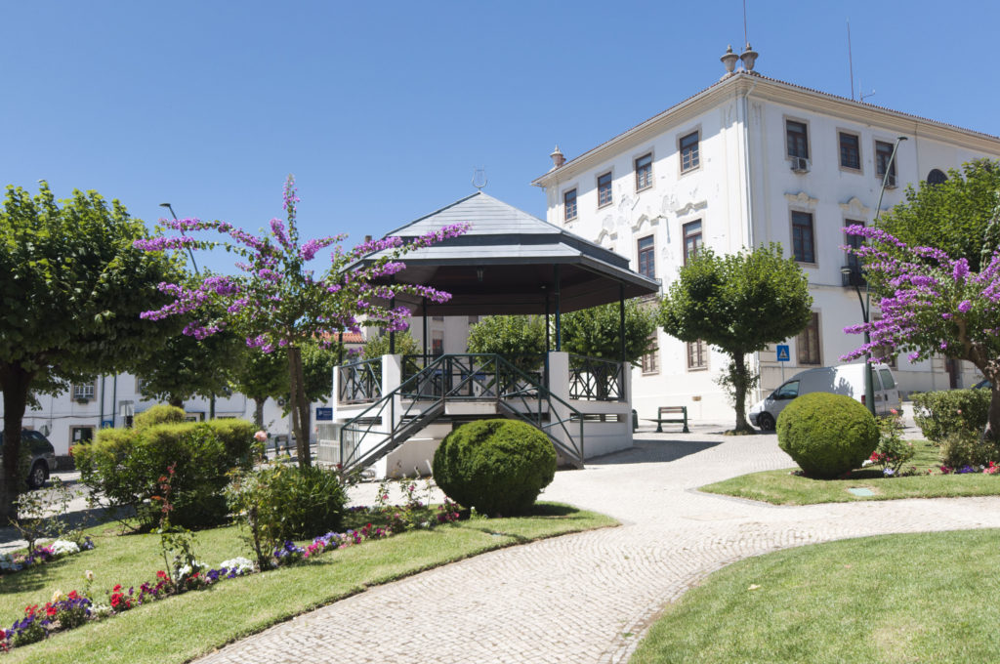
Centro Histórico e Casulo
~700 m • 8 min a pé
Passeio a pé desde o olival até ao Casulo do pintor José Malhoa, Centro de Artes, Torre Histórica e feira de frescos ao sábado de manhã.
A D. Maria João diz: Não deixe de provar as castanhas doces e os 'queques de Figueiró' na pastelaria central.
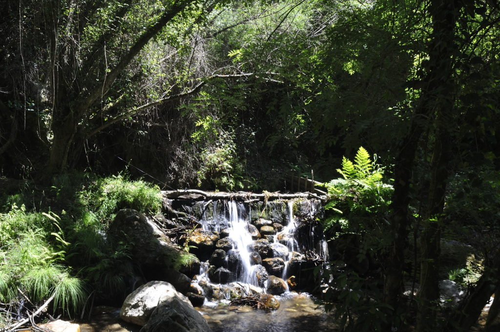
Praia de Ana de Avis
~3.5 km • 5 min de carro
Espaço muito agradável de águas calmas com relvado sombreado, parque de merendas sob arvoredo e zona infantil com acesso fácil.
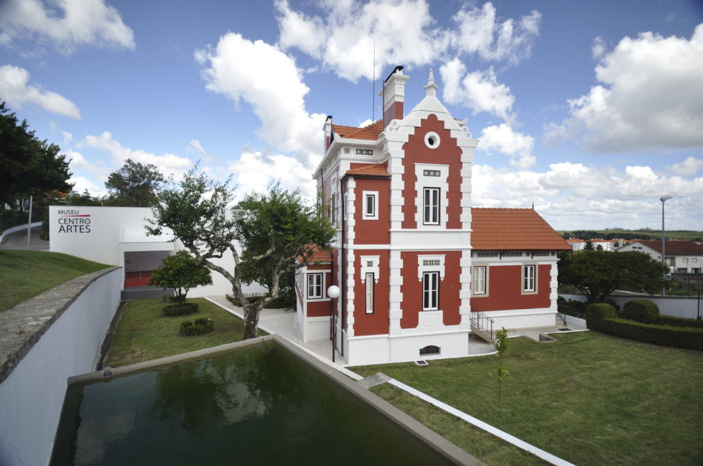
Fragas de São Simão
~7 km • 8 min de carro
Garganta rochosa impressionante de águas cristalinas na Ribeira de Alge. Perfeita para mergulhos refrescantes em família nos dias quentes de verão.
A D. Maria João diz: Vá pela manhã para usufruir da serenidade antes da praia ficar mais concorrida.
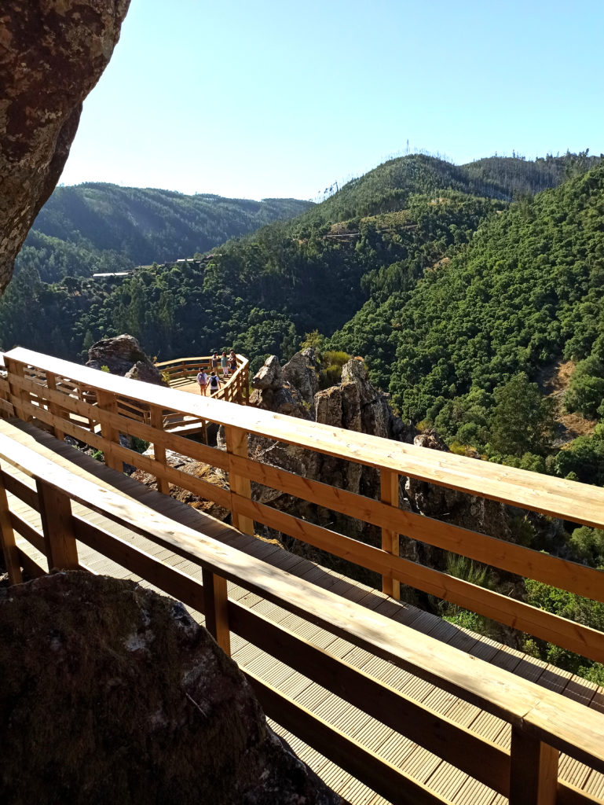
Passadiços de São Simão
~7 km • 8 min de carro
Percurso pedestre em madeira que liga o miradouro com vistas de cortar a respiração, a praia fluvial e a aldeia histórica do Casal de São Simão.
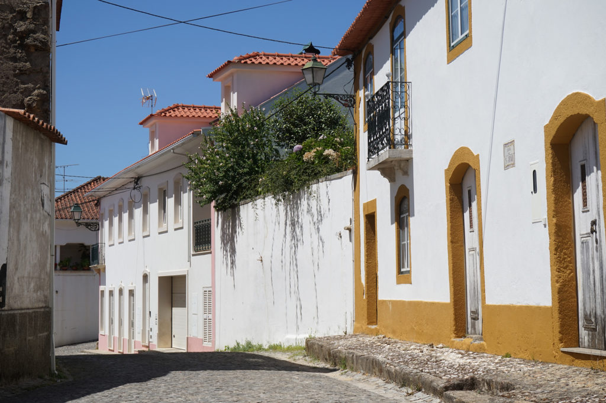
Casal de São Simão
~7 km • 8 min de carro
Uma das mais acolhedoras Aldeias do Xisto de Portugal, com ruelas empedradas, fontes de água pura e o célebre restaurante típico "Varanda do Casal".
A D. Maria João diz: Reserve mesa com antecedência se quiser provar a afamada gastronomia regional de forno a lenha.
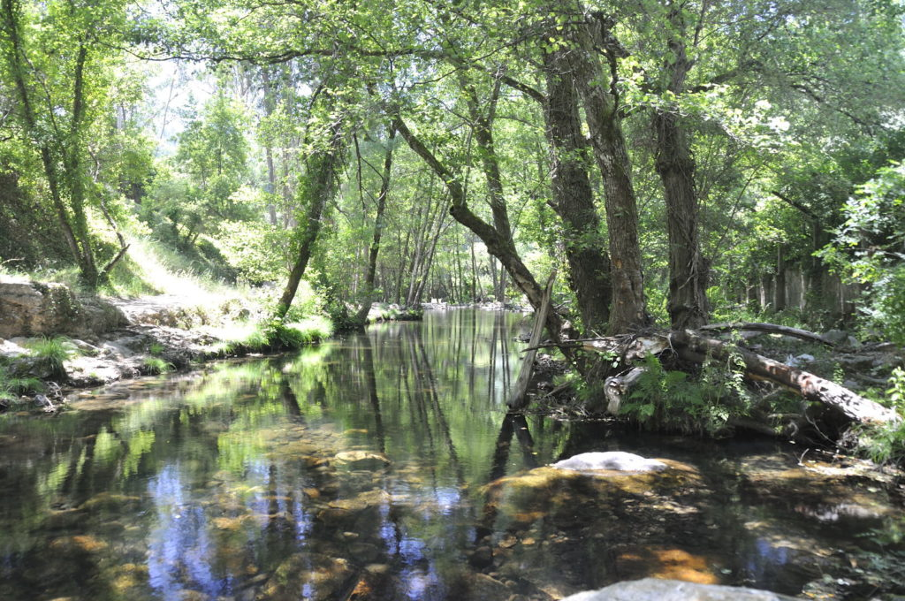
Albufeira de Castelo do Bode
~8 km • 10 min de carro
Encontro da ribeira de Alge com as águas calmas do Zêzere na Foz de Alge. Ponto idílico para passeios de barco, canoagem ou pesca desportiva.
O Que Dizem os Nossos Hóspedes
Comentários reais e carinhosos de famílias e amigos recebidos na Casa do Olival através do Booking.com e Airbnb.
Nota de Transparência Bruto:Avaliações recolhidas a partir dos canais oficiais de reserva (Booking 9.8/10 e Airbnb 4.9/5). A escolha das opiniões devem ser validadas pela anfitriã.
Booking.com • Setembro
"A simpatia e o carinho com que a dona Maria João nos recebeu é indescritível! À chegada tínhamos pão quentinho, queijo e compota caseira. A casa é espaçosa, muito confortável e o olival em volta transmite uma tranquilidade fantástica."
Teresa & FamíliaLisboa • Estadia de 4 noites
Airbnb • Agosto
"Espaço impecável de limpeza, muito acolhedor e com tudo o que é preciso na cozinha. O alpendre exterior e a churrasqueira foram onde passámos quase todas as noites. As crianças puderam brincar à vontade sem qualquer perigo."
Gonçalo P.Porto • Grupo de 5 pessoas
Booking.com • Julho
"Excelente localização para explorar as Fragas de São Simão e as aldeias de xisto, mas com a vantagem de poder ir a pé até à vila tomar café ou ir às compras. A salamandra e os livros para troca deram um toque de casa muito acolhedor."
Cláudia M.Coimbra • Fim de semana a dois
Airbnb • Junho
"A recuperação da casa está cheia de bom gosto e detalhes da história da família. É mesmo uma casa vivida e cuidada com carinho. Sentimo-nos em casa logo nos primeiros cinco minutos. Vamos voltar no outono com certeza!"
Manuel & RitaSintra • Estadia de 3 noites
Booking.com • Maio
"Uma paz impagável. Pudemos apanhar laranjas doces diretamente das árvores e saborear o azeite da quinta que a Maria João nos ofereceu. Conforto térmico excelente e anfitriã super disponível e atenciosa."
Joana & PedroAveiro • Moradia exclusiva
Perguntas Frequentes & Dúvidas
Informações essenciais e transparentes sobre a estadia, serviços incluídos e apoio direto da anfitriã.
A moradia é de aluguer integral e exclusivo para um único grupo de cada vez. Não é possível reservar quartos isolados, garantindo que toda a casa (80 m²), o alpendre, o barbecue e os 5.000 m² de olival são apenas para si e para os seus acompanhantes com total privacidade.
A capacidade máxima é de 6 pessoas adultas, distribuídas por 3 quartos no piso superior: dois quartos com cama de casal (Quarto Moçambique e Quarto Suécia) e um quarto com duas camas individuais (Quarto Portugal). Adicionalmente, disponibilizamos um berço de viagem e cadeira de refeição para crianças até 3 anos sem custos adicionais.
O check-in realiza-se habitualmente a partir das 16:00 e o check-out até às 11:00. Sempre que a ocupação do calendário o permitir, a anfitriã Maria João tem todo o gosto em acolher pedidos de horário flexível. O acolhimento é feito pessoalmente pela anfitriã, com apresentação dos detalhes da casa e mimos regionais de boas-vindas.
Sim, são bem-vindos animais de estimação de pequeno e médio porte, mediante aviso prévio aquando da reserva. O olival vedado de 5.000 m² proporciona um espaço amplo e seguro para momentos ao ar livre, solicitando-se apenas os cuidados habituais com o mobiliário interior e a tranquilidade da propriedade.
Sim, todas as roupas de cama em algodão de qualidade, edredões confortáveis, toalhas de banho e de rosto para todos os hóspedes estão incluídas. A casa dispõe igualmente de secador de cabelo, sabonete artesanal e papel higiénico à chegada.
Sim, dispomos de ligação Wi-Fi estável e de alta velocidade por fibra ótica em toda a habitação. O silêncio do olival, a iluminação natural e as mesas de trabalho proporcionam um ambiente sereno e muito produtivo para quem necessita de combinar descanso com trabalho remoto.
A apenas 2 a 3 minutos de carro (ou cerca de 8 a 10 minutos a pé), encontra no centro de Figueiró dos Vinhos os supermercados Intermarché e Meu Super, padarias com pão quente diário, talhos e farmácia. Aos sábados de manhã realiza-se a feira municipal tradicional com produtores locais de fruta, legumes, mel e queijo da região.
A sala de estar conta com uma salamandra a lenha tradicional de alto rendimento, que aquece confortavelmente as zonas sociais e o piso superior. Disponibilizamos lenha e instruções de utilização aos hóspedes para noites acolhedoras junto à lareira.
Sim. A cozinha dispõe de fogão, forno, micro-ondas, frigorífico, máquina de lavar loiça, máquina de café, cafeteira, torradeira, chaleira elétrica, trem de cozinha completo, louças e talheres para 6 pessoas, além de ferro e tábua de engomar.
Sim, a propriedade dispõe de estacionamento privativo e gratuito no interior da herdade com portão, oferecendo espaço amplo e seguro para mais do que uma viatura.
Ao reservar diretamente connosco, beneficia da melhor tarifa disponível (sem as comissões de serviço cobradas por plataformas terceiras), atendimento direto com a dona Maria João e cancelamento flexível com reembolso integral até 7 dias antes da data de chegada.
A Casa do Olival dista apenas 7 a 8 minutos a pé (menos de 800 metros) do centro histórico de Figueiró dos Vinhos, onde encontra pastelarias tradicionais com o célebre pão-de-ló, restaurantes regionais, farmácia, bancos e o mercado municipal aos sábados.
Ficou com alguma dúvida?
Envie a sua mensagem diretamente à Dona Maria João antes de reservar.